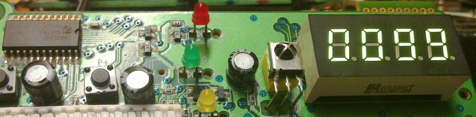
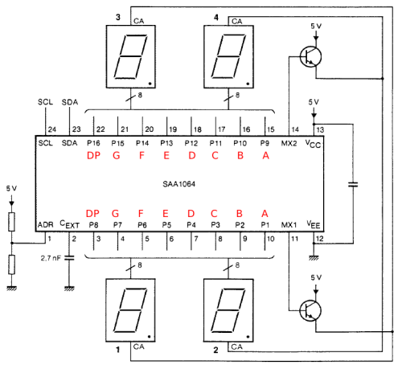

SAA1064 I²C 7-Segment Treiber
Als ich einmal einen Humax-Receiver schlachtete, kam ein Bedienteil heraus, welches aus einer 7-Segment Anzeige und einem SAA1064 bestand.
Dieser Treiber-Chip lässt sich per I²C ansteuern und kurzerhand schloss ich ihn an ein Grasshopper-Board an und mit ein paar Zeilen Code lief das Display.
Der Code läuft auf Linux und kann auf jedem Embedded- oder PC-System verwendet werden, welches ein i2c-dev-Gerät bereitstellt.
Rasperry, Grasshopper, NGW100, BananaPi, ... und wie sie alle heissen.
Der Code ist auch ein schönes, kurzes Beispiel, wie man den I²C-Bus unter Linux nutzbar macht.
Hier findest du ein gepacktes Archiv mit Code und Makefile für das AVR32 Grasshopper Board. Ebenso ist ein compiliertes bin-File enthalten.
Und hier findest du den Code direkt zum Lesen im Browser (git browser)
Und hier das SAA1064 Datenblatt
 